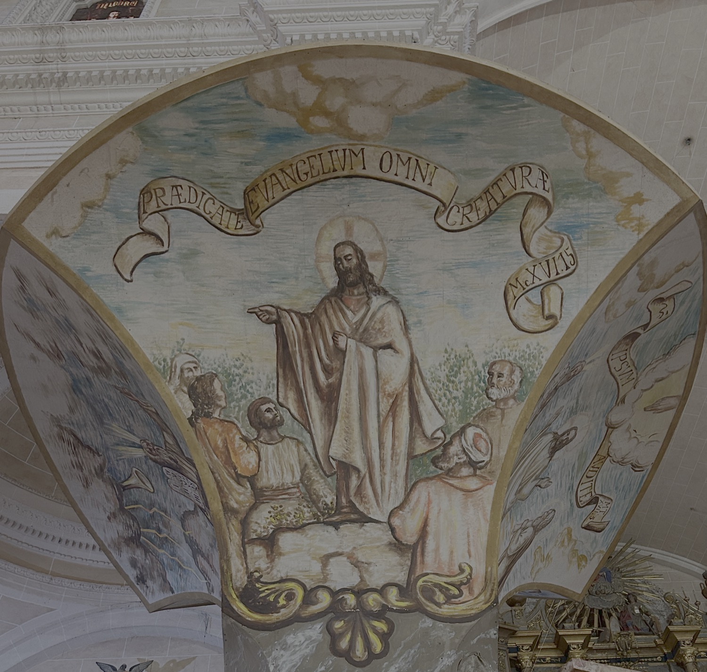

Aquest fresc descriu l’escena narrada a l’Evangeli de sant Marc (16:15), en la qual Jesús ressuscitat s’apareix als apòstols i els encomana l’evangelització de tot el món, dient-los: “Anau per tot el món i predicau l’evangeli a totes les criatures”.
Els frescos del tornaveu de la trona són obra de Mn. Llorenç Bonnín (1952). El tornaveu reprodueix la forma del que Antoni Gaudí dissenyà per a la trona major de la Seu, retirat l'any 1971.